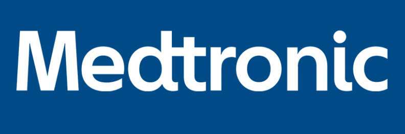

My Story
I started working at Medtronic in June of 2020 as an Integrated Health Solutions Intern and I have been continuing to work with them as a contract full-stack developer since September of 2020.
My role as an IHS Intern was my first proffesional exposure to web development and I learned a great deal about React.JS, Flask, and SQLAlchemy. I started by creating simulation modules for the Ottowa hospital within Anylogic and gradually moved on to more challenging tasks.
Here is a summary of the things that I have been working @ Medtronic:
- - Added upload functionality to the Analytics Dashboard.
- - Created bed and PPE simulation modules for the Ottowa hospital.
- - Updated the Return on Investment Value Tracker for the Southlake hospital.
- - Added PowerBI modules to our Analytics Dashboard without the sign-in requirements for the New Brunswick hospital.
I am currently working on creating an SFTP based upload platform for our dashboard and also a complete redesign to make it look modern.
Technologies:
- - Python
- - Flask + Flask REST Framework
- - React JS
- - Postgres + SQLAlchemy
- - Anylogic + Anylogic API
- - PowerBI API
- - Git
- - Heroku
Upload Functionality
The Ottowa Hospital Simulation Modules